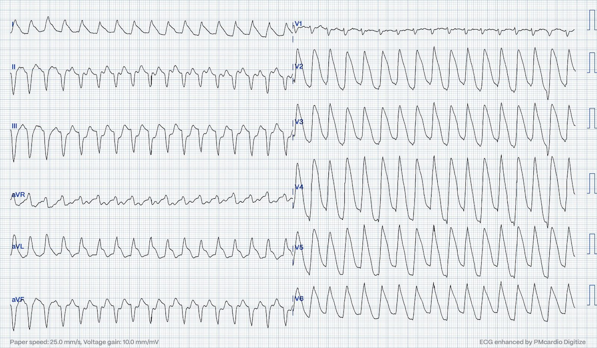
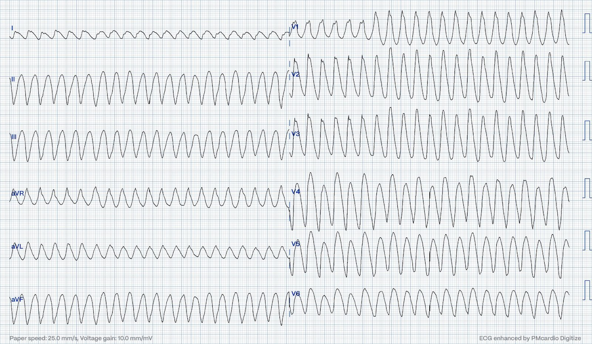
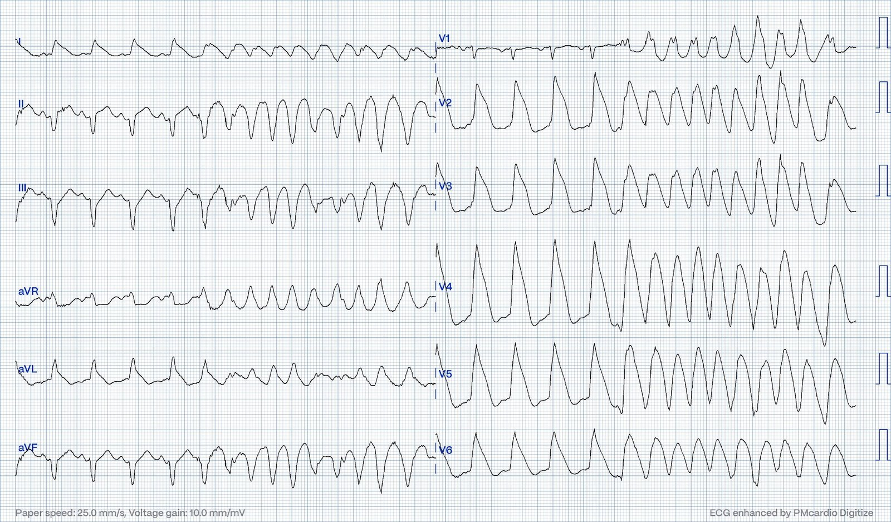
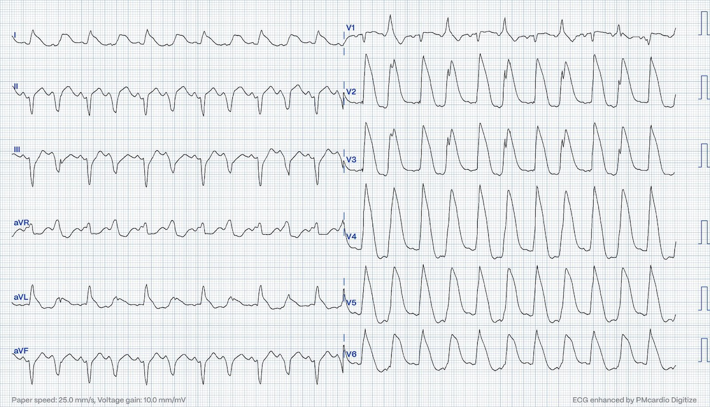
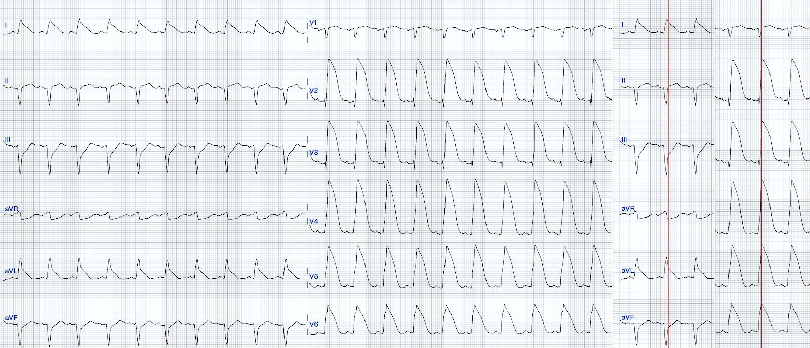
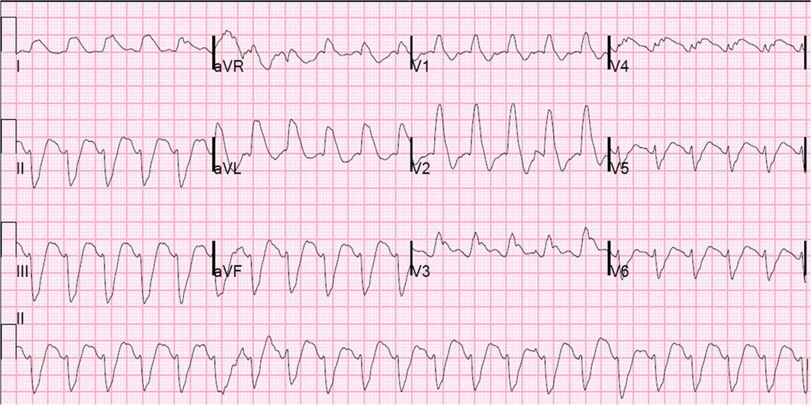
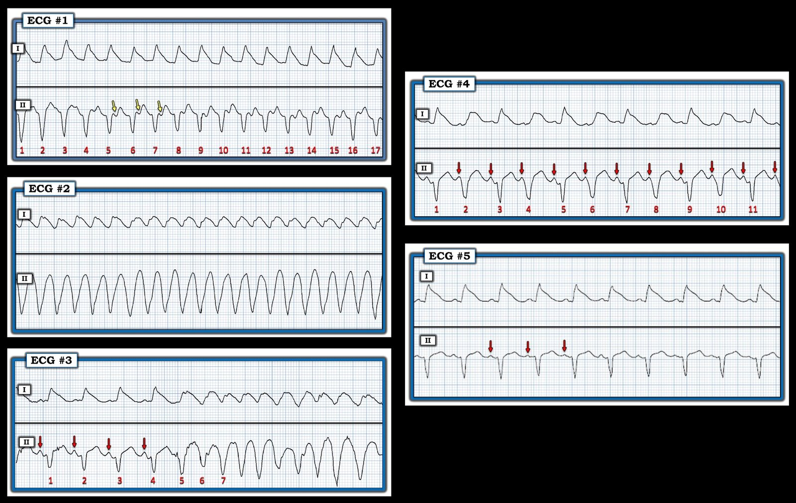

27/09/2023 — Nhịp nhanh đều rất nhanh: 2 điện tâm đồ của cùng một bệnh nhân. Chuyện gì đang xảy ra?
Bản dịch tiếng Việt của bài "Very fast regular tachycardia: 2 ECGs from the same patient. What is going on?" – Dr. Smith’s ECG Blog. Giữ nguyên toàn bộ 8 hình ảnh của bản gốc.
Bài này do Magnus Nossen, từ Na Uy, viết, kèm bình luận và bổ sung của Smith
Một người hút thuốc lá khoảng 50 tuổi, không có tiền sử bệnh lý trước đó, gọi đội cấp cứu ngoài viện (EMS) vì đau ngực khởi phát cấp tính. Khi EMS đến, bệnh nhân trông có vẻ bệnh nặng cấp tính và than đau ngực. Một điện tâm đồ được ghi ngay lập tức và được trình bày dưới đây. Bạn đọc điện tâm đồ này thế nào?


Điện tâm đồ #1
Có một nhịp nhanh đều với tần số thất khoảng 180 nhịp/phút.
Bình luận của Smith: Khi có một nhịp nhanh QRS rộng đều, trước hết hãy đánh giá xem đó có phải nhịp xoang hay không. Với tần số 180, điều này khó xảy ra. Bệnh nhân không ổn định. Vì vậy, bước đầu tiên là chuyển nhịp. Có thể thực hiện bằng adenosine hoặc bằng sốc điện. Sau khi chuyển nhịp, nếu thành công, bạn có thể dành ít phút để đánh giá điện tâm đồ 12 chuyển đạo chi tiết hơn và đánh giá điện tâm đồ sau chuyển nhịp. Trong phân tích này, điều cốt yếu là đánh giá xem khử cực ban đầu nhanh hay chậm. Nếu nhanh, nghĩa là khử cực đang lan truyền nhanh và hẳn phải đi qua các sợi dẫn truyền (sợi Purkinje), do đó là nhịp trên thất. Đó là nhịp xoang hay là một rối loạn nhịp trên thất? Những điểm quan trọng khác cần xem xét là 1) liệu nó có giống một RBBB, LBBB điển hình không, 2) liệu nó có trông “kỳ dị” không (nghĩa là không có phức bộ RS nào và, nếu không có, liệu các phức bộ đơn cực có “đồng hướng” không (tất cả cùng một cực tính ở các chuyển đạo trước tim), và 3) liệu có trục “tây bắc” không (giữa -90 và 180). Phân tích: Ở V1 có dạng RS và nó nhanh, chỉ hơn 40 ms một chút từ khởi đầu sóng r đến đáy sóng s. Điều này có nghĩa đây là nhịp trên thất. Đây không phải VT.
Magnus giải thích thêm ở đây:
Ở các chuyển đạo chi có trục lệch trái, phù hợp với LAFB. Những gì trông như phức bộ QRS rất rộng thực ra là độ lệch đoạn ST rất lớn. Điều này sẽ rõ hơn nếu bạn phóng to chuyển đạo V1 hoặc chuyển đạo aVL, nơi điểm J dễ xác định nhất. Sau đó hãy tưởng tượng vẽ một đường thẳng đứng cắt qua các phức bộ QRS khác. ST chênh lên ở V2-V6 cũng như ở I và aVL trở nên dễ nhận ra. Có các sóng P ngược dòng thấy được trong đoạn ST ở các chuyển đạo dưới, dễ thấy nhất ở chuyển đạo II. Như vậy, điện tâm đồ trên cho thấy một nhịp nhanh trên thất với các sóng P ngược dòng thấy được trong đoạn ST ở các chuyển đạo dưới và dòng tổn thương rất lớn ở các chuyển đạo trước và bên, phù hợp với OMI diện rộng. Nói ngắn gọn, đây là SVT với “ST chênh lên vây cá mập (Shark Fin STE)” chứ không phải nhịp nhanh thất.
Có OMI không? PM Cardio Queen of Hearts đánh giá thế nào: OMI với độ tin cậy thấp.
Chỉ một lát sau khi ghi điện tâm đồ đầu tiên, bệnh nhân mất ý thức và điện tâm đồ trên máy theo dõi thay đổi.


Điện tâm đồ #2
Bạn nghĩ sao?
Smith: Tần số nhanh hơn. Ở V1 không còn dạng RS nữa. Giờ đây có QRS đồng hướng. Không chỉ vậy, thời gian từ khởi đầu QRS đến đỉnh giờ gần 120 ms, cho chúng ta biết đây là VT.
Magnus: Điện tâm đồ giờ cho thấy một nhịp nhanh QRS rộng với tần số thất khoảng 210 nhịp/phút, nhanh hơn so với điện tâm đồ ban đầu. Có thay đổi rõ rệt về hình dạng các dạng sóng và cũng có thay đổi đáng kể về cực tính của các phức bộ QRS ở các chuyển đạo trước tim. Ở điện tâm đồ #1 có sóng R đơn pha từ V2-V6. Ở điện tâm đồ #2 không còn QRS đồng hướng từ V2-V6 nữa. Có sự chuyển dần cực tính diễn ra suốt các chuyển đạo trước tim. Cũng có biến đổi nhẹ về hình dạng QRS trong lúc ghi, khiến bản ghi điện tâm đồ phù hợp với một VT đa hình thái. Các nỗ lực hồi sức đã được tiến hành. Bệnh nhân lúc có lúc mất tái lập tuần hoàn tự nhiên (ROSC).
Điện tâm đồ dưới đây (ghi trong lúc ROSC ngắn) cho thấy cả hoạt hóa thất bình thường (ở đầu bản ghi là nhịp xoang) lẫn nhịp nhanh thất đa dạng (nửa sau của bản ghi). Nói cách khác, điện tâm đồ dưới đây chứng minh rằng điện tâm đồ đầu tiên đúng là cho thấy một dạng nhịp nhanh trên thất nào đó, dựa trên hình dạng QRS và trục QRS.
Có OMI không? PM Cardio Queen of Hearts đánh giá thế nào: Không phải OMI, với độ tin cậy thấp.


Điện tâm đồ #3
Các nỗ lực hồi sức vẫn tiếp tục. ROSC đạt được ngay trước những cơn nhịp nhanh thất mới. Sau amiodarone và nhiều lần khử rung, và khoảng 20 phút sau lần ngừng tim đầu tiên, đã đạt ROSC ổn định. Bệnh nhân được chuyển bằng đường hàng không đến trung tâm PCI. Hai điện tâm đồ sau đây được ghi trong lúc vận chuyển
Có OMI không? PM Cardio Queen of Hearts đánh giá thế nào: OMI với độ tin cậy thấp.


Điện tâm đồ #4
Điện tâm đồ ở trên và ở dưới đều được ghi sau khi đạt ROSC. Cả hai điện tâm đồ về cơ bản cho thấy cùng một điều. Một OMI rất lớn về mặt điện tâm đồ với ST chênh lên dạng vây cá mập. Điện tâm đồ ở trên có nhịp đôi thất với hình dạng RBBB và LAFB. Điện tâm đồ ở dưới cho thấy một ví dụ rất rõ ràng, đúng sách giáo khoa về dạng sóng QRST hình tam giác, còn gọi là “vây cá mập (Shark Fin)”. Thêm vào bên phải là điểm J được đánh dấu bằng đường thẳng đứng màu đỏ.
Có OMI không? PM Cardio Queen of Hearts đánh giá thế nào: OMI với độ tin cậy cao.


Điện tâm đồ #5
Có tắc cấp tính 100% LAD đoạn gần.
Các động mạch vành khác bình thường. Thời gian nằm viện có biến chứng viêm phổi hít, nhịp nhanh thất tái phát và huyết khối thành tim. Siêu âm tim cho thấy rối loạn vận động thành (WMA) vùng trước và mỏm, với LVEF ước tính 40%. Bệnh nhân được đặt máy khử rung tim cấy được (ICD). Troponin T đạt đỉnh “chỉ” trên 2000 ng/L một chút. Cuối cùng bệnh nhân hồi phục tốt.
Có OMI không? PM Cardio Queen of Hearts đánh giá thế nào: OMI với độ tin cậy cao.
Những điểm cần học từ Smith:
1. Nhịp nhanh xoang, hoặc SVT khác, kèm dẫn truyền lệch hướng hoặc blốc nhánh có thể giống VT.
2. Nhịp nhanh xoang, hoặc SVT khác, kèm vây cá mập (Shark Fin) cũng có thể giống VT
3. Nếu phần đầu của QRS nhanh, nhịp nhiều khả năng là nhịp trên thất (kể cả nhịp xoang)
4. Nếu tần số từ 180 trở lên, nhiều khả năng đó không phải nhịp xoang.
5. Nếu bệnh nhân không ổn định và có một nhịp nhanh đều, dù QRS hẹp hay rộng, có chỉ định chuyển nhịp ngay lập tức bằng adenosine hoặc bằng sốc điện.
PHẦN THƯỞNG: Đây là gì?
https://drsmithsecgblog.com/2010/11/wide-complex-tachycardia-its-really.html (Nhịp nhanh QRS rộng: thực ra nó là…)



===================================
BÌNH LUẬN CỦA TÔI, bởi KEN GRAUER, MD (27/9/2023):
===================================
Một loạt bản ghi hấp dẫn của Dr. Nossen — minh họa hình ảnh vây cá mập (shark fin) ấn tượng do OMI cấp tính động mạch LAD. Bệnh nhân cần hồi sức vì VT đa dạng tái phát — nhưng may mắn đã được chuyển thành công đến trung tâm PCI, nơi đạt được tái tưới máu.
Đáng quan tâm về mặt học thuật — là các rối loạn nhịp đã xuất hiện. Tôi tập trung bình luận vào việc giải quyết vấn đề phân biệt giữa nhịp trên thất với nhịp thất.
- Để dễ hình dung — tôi đã gộp 5 bản ghi của ca hôm nay trong Hình 1 thành 5 dải nhịp 2 chuyển đạo, đánh nhãn lần lượt theo 5 điện tâm đồ của ca hôm nay.


Nhịp Trên Thất là nhịp gì?
Như tôi đã nhấn mạnh ở trên — phần bàn luận của tôi về việc giải quyết vấn đề nhịp mang tính học thuật, vì các nhịp nhanh kèm mất ổn định huyết động trong ca hôm nay cần sốc điện, mà không cần xác định mọi chi tiết của nhịp. Đó là trường hợp ở điện tâm đồ #2 — trong đó nhịp VT đơn dạng, cực kỳ rộng và nhanh này đi kèm mất ý thức.
- Bệnh nhân được sốc điện — rồi bắt đầu một quá trình hồi sức tích cực kéo dài.
- Một thời gian sau khi chuyển nhịp VT ở điện tâm đồ #2 bằng sốc điện — nhịp thể hiện ở điện tâm đồ #3 được ghi lại, trong đó các mũi tên ĐỎ làm nổi bật sóng P xoang của 4 nhát đầu tiên trong bản ghi này (trước khi nhịp xấu đi thành VT Đa Dạng trong phần còn lại của bản ghi).
- Mặc dù ban đầu tôi không chắc chắn về căn nguyên của nhịp ở điện tâm đồ #1 — việc phát hiện hình dạng QRS gần như giống hệt ở 4 nhát dẫn truyền từ xoang thấy rõ ở đầu dải nhịp chuyển đạo II trong điện tâm đồ #3 — gợi ý mạnh mẽ rằng nhịp ở điện tâm đồ #1 là nhịp trên thất!
- ST chênh lên “vây cá mập“ (thấy rõ ở chuyển đạo I của điện tâm đồ #1) — tạo ra hình ảnh giả của QRS giãn rộng. Điều này có nghĩa là các sóng lệch âm thấy ngay sau QRS ở chuyển đạo II của điện tâm đồ #1 hẳn phải là các sóng P ngược dòng với khoảng RP' khá dài. Như vậy, nhìn lại— nhịp của điện tâm đồ #1 (ít nhất là từ nhát #5 đến nhát #16 trong điện tâm đồ #1) hẳn phải là một SVT vào lại với tần số ~170-180/phút, kèm các sóng P ngược dòng.
- VT tái phát nhiều lần — và Amiodarone tĩnh mạch đã được dùng. Tại một thời điểm nào đó trong quá trình này, điện tâm đồ #4 được ghi. Một lần nữa — hiểu biết về hình dạng của các phức bộ QRS dẫn truyền từ xoang (được thể hiện rõ qua 4 nhát đầu tiên trong điện tâm đồ #3) — giúp tôi có thể "dò bước" bằng compa các sóng P xoang đều (mũi tên ĐỎ) suốt toàn bộ dải nhịp chuyển đạo II trong điện tâm đồ #4. Vì có thể thấy phức bộ QRS của mỗi nhát mang số chẵn rộng hơn và có khoảng PR quá ngắn để dẫn truyền — nhịp ở điện tâm đồ #4 hẳn phải là nhịp đôi thất.
- Cuối cùng — nhịp xoang bình thường đã đạt được và duy trì ở điện tâm đồ #5. Lưu ý rằng ST chênh lên dạng vây cá mập vẫn tồn tại ở chuyển đạo I của điện tâm đồ #5 — và phức bộ QRS của các nhát dẫn truyền từ xoang trong bản ghi này có thể thấy rõ là hẹp ở chuyển đạo II.
Bài học về Rối loạn nhịp cần rút ra:
Ban đầu tôi không tự tin về cách đọc nhịp của mình trong 5 bản ghi hôm nay. Đôi khi — cần một chút “thời gian ngấm thuốc” (tincture of time) cùng với việc có thêm các bản ghi khác để “ghép lại” các mảnh của câu đố rối loạn nhịp.
- Trong ca hôm nay — Việc thấy 4 nhát dẫn truyền từ xoang ở đầu điện tâm đồ #3 — đã xác nhận với tôi rằng nhịp ở điện tâm đồ #1 là một SVT vào lại kèm sóng P ngược dòng — và nhịp ở điện tâm đồ #4 là nhịp đôi thất.